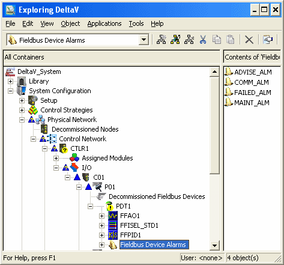
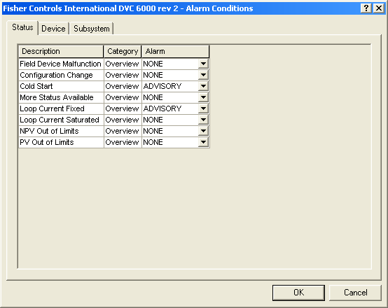
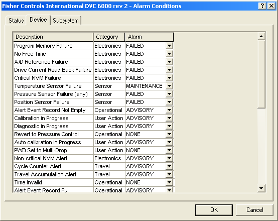

Configuring device alarms
Fieldbus and HART devices support the following device alarms:
Not Communicating (COMM_ALM) - the device has stopped communicating.
Failed (FAILED_ALM) - the device has determined that it can not perform its critical functions.
Maintenance (MAINT_ALM) - the device has determined that it requires maintenance.
Advisory (ADVISE_ALM) - the device has determined a condition that does not fall into the other categories. The severity of an Advisory alarm depends on the device type.
Fieldbus devices
Fieldbus devices also support the Abnormal (ABNORM_ALM) alarm, indicating that the device is experiencing an abnormal condition. The specific meaning of an Abnormal alarm function depends on the device type. Refer to the device documentation for a more specific description of the parameters.
Fieldbus devices that are compliant with the FOUNDATION fieldbus Diagnostics Profile (FF-912) specification support the following alarms rather than the standard DeltaV alarms:
- Check Function (CHKFNC_ALM) - the device has determined a change of configuration. In DeltaV, the Check Function alarm has a default priority setting of Log; the event is recorded in the Event Journal, but does not appear on the Alarm Banner or on the standard device faceplate. The FF-912 parameter prefix for this alarm is FD_CHECK.
- Failed (FAILED_ALM) - the device has determined that it cannot perform its critical functions. The FF-912 parameter prefix for this alarm is FD_FAIL.
- Maintenance (ADVISE_ALM) - the device has determined a condition that does not fall into the other categories. The severity of an advisory alarm depends on the device type. The FF-912 parameter prefix for this alarm is FD_MAINT.
- Off-specification (MAINT_ALM) - the device has determined that it requires maintenance. The FF-912 parameter prefix for this alarm is FD_OFFSPEC.
HART devices
The interface shows the individual alarms for a fieldbus device in the right pane of the DeltaV Explorer along with their configurable parameters. The interface for HART devices in the Explorer hierarchy is similar.

For HART devices and HART device templates, the system also provides a dialog that enables you to assign HART device conditions to one of the four device alarms. HART device definitions support the Alarm Conditions dialog in read-only mode so that you can see the factory-defined relationships between conditions and alarms. Note that if you change a FAILED condition to MAINTENANCE or ADVISORY, or if you change a MAINTENANCE or ADVISORY condition to FAILED, the device itself does not change its behavior in terms of how it sets its output. Only alarming behavior is affected. Launch the Alarms Conditions dialog from the Alarms & Events tab of the device Properties dialog.
You can assign the HART status conditions and DeltaV subsystem alarm conditions to one of the four alarms for all HART devices as shown in the graphic below (the SIS tab is also visible when the device is connected to a Logic Solver).

For certain Emerson PlantWeb HART devices, you can also assign device-specific conditions (from standard HART command 48) to one of the four device alarms:

Device alarms can be enabled to participate in the DeltaV alarm interface tools such as the alarm banner and the alarm summary.